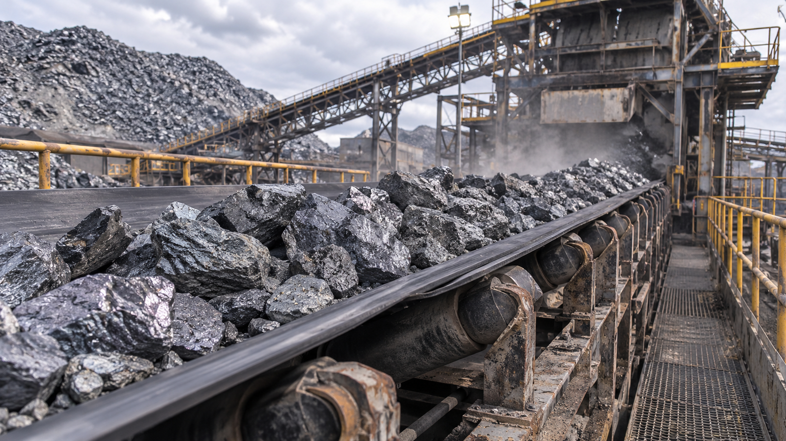
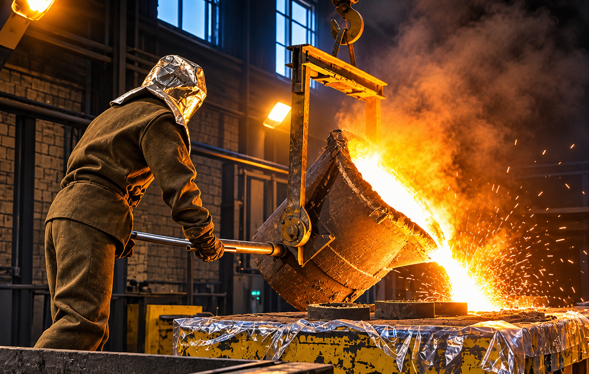
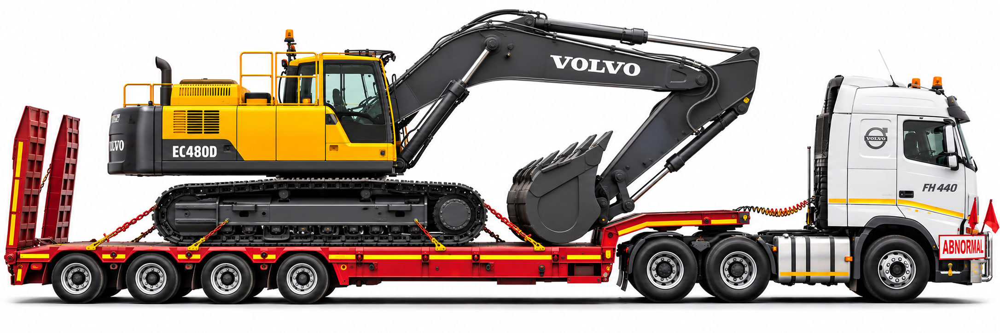

Mining
MiningOperation / 01
Chrome mining
Eastern Chrome Mines in the Steelpoort Valley, Limpopo, and Western Chrome Mines near Mooinooi, North West.
UndergroundOpencast
Mining in Limpopo and North West, and smelting across Limpopo, North West and Mpumalanga.
Follow the processSamancor Chrome operates two mining operations and six smelting operations across three provinces, supported by a corporate office in Sandton.
The mines extract chrome ore and prepare it in beneficiation plants. The smelters convert chrome-bearing feed into ferrochrome, principally charge chrome for the steel industry.
Chrome ore is extracted from the Bushveld Igneous Complex through underground and opencast mining.
Mining operationsBeneficiation plants prepare and concentrate the ore into suitable feed materials.
Mining operationsTailings re-treatment plants recover further chrome from material already processed.
Mining operationsSubmerged-arc and other furnace technologies convert chrome-bearing feed into ferrochrome.
Smelting operationsCharge chrome and chrome ore are supplied to stainless and special steel producers.
Sales and marketingMiningEastern Chrome Mines in the Steelpoort Valley, Limpopo, and Western Chrome Mines near Mooinooi, North West.

BeneficiationOre preparation, concentration and tailings re-treatment.

SmeltingSix smelting operations in Mpumalanga, North West and Limpopo produce charge chrome, with ferrochrome plants located close to the mines they draw from.
Heavy-duty equipment and transport keep mining operations moving efficiently.

The eastern rim of the Bushveld Igneous Complex hosts one mining operation and two smelters.
Mining and smelting are located close together, north-west of Johannesburg.
Two smelting operations convert chrome-bearing feed into ferrochrome.
Underground and opencast mines, beneficiation plants and tailings re-treatment plants along the eastern rim of the Bushveld Igneous Complex.
Underground mines, beneficiation plants and tailings re-treatment plants near Mooinooi.
A smelting operation outside Brits producing charge chrome.
A smelting operation at Mooinooi, adjacent to Western Chrome Mines, producing charge chrome.
A major ferrochrome plant in eMalahleni and a base for joint ventures.
A charge chrome smelting operation in Middelburg with a history dating back to 1964.
A smelting complex in the Burgersfort area producing charge chrome.
A smelting operation in Steelpoort, close to Eastern Chrome Mines.
Chromium gives stainless steel its corrosion resistance. Charge chrome is an important input to stainless and special steels, and chrome ore is also sold.
 Ferrochrome
FerrochromeContact the corporate office for general enquiries. Sales and procurement matters have dedicated channels.